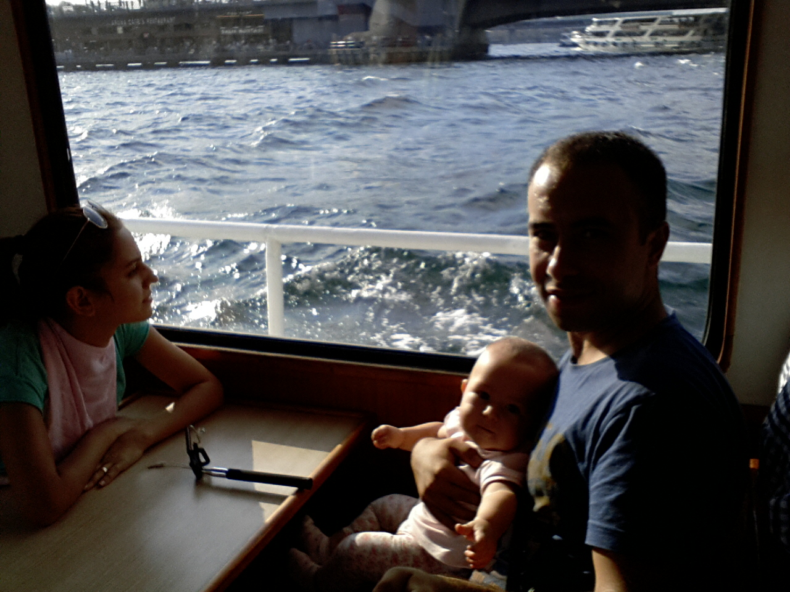

|  | Gökhan CİNBAŞEmekli Pilot |
2009 yılında Kara Harp Okulu'ndan mezun oldum. 2009-2010 yılları arasında Helikopter Pilot Subay Temel Kursu'nu tamamlamayı müteakip UH-1 pilotu olarak göreve başladım. Yaklaşık üç yıl boyunca yurdun çeşitli bölgelerinde Genel Maksat Helikopter görevleri icra ettim. Müteakiben 2013 yılında AH-1W Super-Cobra helikopteri intibak kursu aldım ve Taarruz Filosuna tayin oldum. 2019 yılında AH-1W Super-Cobra Test-Tecrübe Pilotluğu kursu aldım. Çoğunlukla Terörle Mücadele Harekat Bölgesi'nde gerçek harekatlar olmak üzere taarruz pilotu/eğitici pilot/test pilotu olarak görev yaptım. Ayrıca Mayıs 2019 tarihinde Amerika Birleşik Devletleri'nde yaklaşık altı ay süren Kara Havacılık Subay Tekamül Kursu'na iştirak ettim. 2020 yılında emekli oldum.
| Telefon | E-posta | Ev Adresi |
|---|---|---|
| 0552 242 04 03 | gokhancinbas@windowslive.com | Etimesgut/ANKARA |
| 0552 242 04 03 | gokhan.cinbas2334@gmail.com | Etimesgut/ANKARA |
|
|